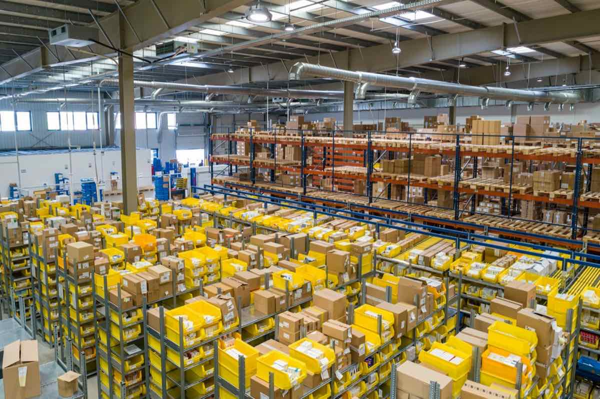

Achats · Supply Chain · Excellence opérationnelle
Les Achats deviennent un véritable levier de performance.
N-CONSULT accompagne les organisations publiques et privées dans la transformation des Achats, de la Supply Chain et de l’Excellence Opérationnelle.
Transformer la performanceStructurer les organisationsDévelopper les talents

20+ans d’expérience opérationnelle dans des environnements exigeants
20+
ans d’expérience
13+
ans de conseil et de formation
360°
Achats • Supply Chain • Opérations
27
formations Achats au catalogue
Notre conviction
La performance ne repose pas uniquement sur la négociation des prix. Elle naît d’une vision globale des Achats, de la Supply Chain, des processus et des femmes et des hommes qui les font vivre.
- Expertise métier — plus de 20 ans d’expérience opérationnelle.
- Impact mesurable — des recommandations concrètes et déployables.
- Transfert de compétences — vos équipes gagnent en autonomie.
Nos expertises
Trois expertises, une même ambition : une performance durable.
Des offres complémentaires conçues autour de vos enjeux — du diagnostic au déploiement, de l’équipe à l’individu.
01
02 03
03
Conseil
Diagnostic Achats, stratégie, organisation, cartographie des dépenses, optimisation des coûts, pilotage de la performance, Supply Chain et excellence opérationnelle.
Nos missionsFormation
Parcours en intra ou inter-entreprises, en présentiel, à distance et sur mesure — du niveau junior au niveau senior.
L’AcadémieAccompagnement
Coaching, mentorat, prise de poste, évolution professionnelle, préparation aux entretiens et développement des compétences.
L’accompagnement individuelNotre promesse
Des résultats concrets — pas seulement des recommandations.
Chaque mission vise un impact durable, mesurable et approprié par vos équipes.
01
Réduire les coûts
02
Professionnaliser les équipes
03
Structurer les processus
04
Sécuriser les achats
05
Accompagner le changement
06
Améliorer la performance
« Faire des Achats un partenaire stratégique de la Direction Générale. »Notre vision
Notre méthode
Une méthode qui transforme le diagnostic en résultats durables.
Une démarche pragmatique, construite avec vos équipes.
01
Comprendre
Analyser l’organisation et les enjeux.
02
Concevoir
Élaborer une solution adaptée.
03
Déployer
Accompagner les équipes sur le terrain.
04
Pérenniser
Mesurer et transférer les compétences.
Références
Ils nous ont fait confiance.
Entreprises, institutions financières, universités et cabinets, au Maroc et à l’international.
Bank Al-Maghrib
CDG — MADAEF
COFICAB
CIMAT
BIOPHARMA
Université Euromed de Fès
Université Internationale de Rabat
SUP RH Management
SNCE
OCBM
GIDNA
SMAGC
IFCAR Solutions
TIM Log Solution
Afrika Job
Wild PC
Lincoln & Newman
Succès Consulting
Educafor
et bien d’autres…
Perspectives
Nos dernières publications

Sécuriser ses délais fournisseurs : 4 leviers concrets
Préparer une négociation à partir des coûts
Votre enjeu mérite une réponse concrète.
Un projet ? Une problématique Achat ? Une formation ? Parlons-en.